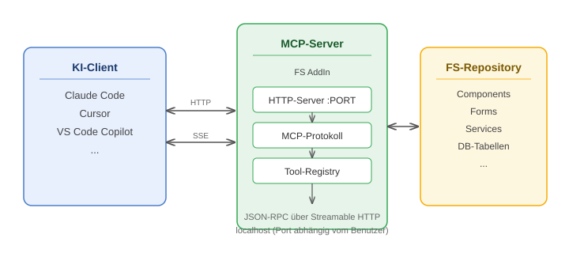

MCP-Server (Preview)
Der MCP-Server stellt eine Schnittstelle bereit, über die KI-Assistenten direkt auf das FrameworkStudio-Repository zugreifen können. Er implementiert das Model Context Protocol (MCP) und läuft als AddIn innerhalb der FrameworkStudio IDE.
Important
Der MCP-Server ist ein Preview-Feature in Version 4.8. Funktionsumfang und Schnittstellen können sich in zukünftigen Versionen ändern.
Was ermöglicht der MCP-Server?
KI-Assistenten wie Claude Code, Cursor oder GitHub Copilot können über den MCP-Server:
- Elemente auflisten und lesen — Components, Forms, Services, DB-Tabellen und alle weiteren FS-Elementtypen
- Code inspizieren — Methoden-Quellcode abrufen
- Suchen — nach Namen, im Code, nach Abhängigkeiten und in der Element-Dokumentation
- Änderungshistorie abfragen — Versionsverlauf von Elementen, Methoden und CheckIns
Architektur

Der MCP-Server wird über das Tools-Menü in der IDE gestartet und läuft als HTTP-Server auf localhost:PORT.
KI-Clients kommunizieren über das standardisierte MCP-Protokoll (JSON-RPC über Streamable HTTP mit Server-Sent Events).
Die Tool-Registry stellt alle verfügbaren Operationen bereit. Jedes Tool greift über die FS-API auf das Repository zu — im Kontext des eingeloggten Benutzers.
Voraussetzungen
- FrameworkStudio 4.8 oder höher
- Aktive FS-Session mit eingeloggtem Benutzer
- Ein MCP-fähiger KI-Client (z.B. Claude Code, Cursor, VS Code mit Copilot)
Einschränkungen
- Der Server ist nur lokal erreichbar (
localhost) — kein Zugriff von außen - Pro IDE-Instanz läuft maximal ein MCP-Server
- Der Server arbeitet im Kontext des eingeloggten FS-Benutzers — Berechtigungen gelten wie in der IDE
- In der Preview-Version stehen ausschließlich lesende Operationen zur Verfügung
Sicherheitshinweis
Der MCP-Server verfügt über keine Authentifizierung. Jeder Prozess auf der lokalen Maschine mit Zugriff auf localhost:Port, erhält uneingeschränkten Lesezugriff auf alle Repository-Daten — einschließlich Methoden-Quellcode und Datenbankschema.
Das ist für ein lokales Entwickler-Tool bewusst so gestaltet. Daraus folgt:
- Den Server nicht auf einer anderen Adresse als
localhostbetreiben - Den Server beenden wenn die IDE-Session abgeschlossen ist
- Auf gemeinsam genutzten Entwicklermaschinen beachten, dass andere lokal angemeldete Benutzer ebenfalls Zugriff haben